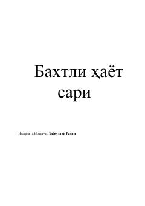

BHHaqiqiy baxt imon, qalb pokligi va ma'naviyatda ekanini o'rgatuvchi kitob.
Kitob baxtli hayotning asoslari, qalb xotirjamligi, imon-e'tiqod va ruhiy salomatlik haqida so'zlaydi. Muallif boylik va moddiy ne'matlar baxtni ta'minlay olmasligini, haqiqiy saodatning iymon, mehr va qalb pokligida ekanini tushuntiradi. Shuningdek, vaqt qadri, oilaviy totuvlik va sog'lom turmush tarzi mavzulari ham yoritilgan.